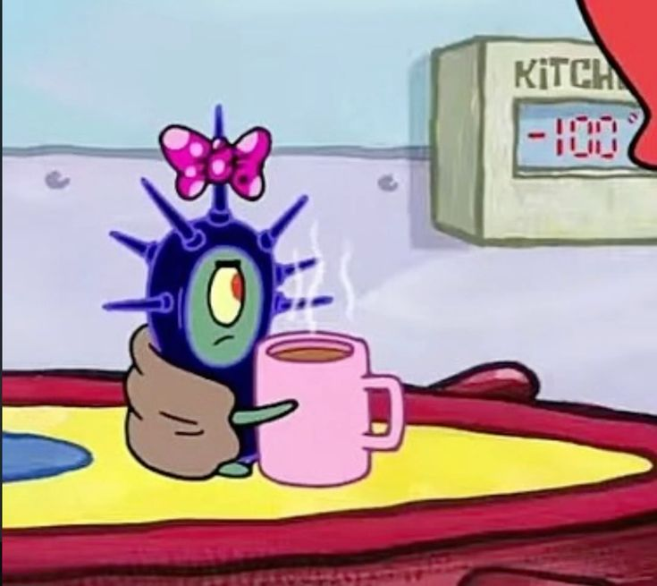

In den digitalen Grundlagen habe ich so viel gelernt und ausprobiert, das hätte ich alleine nie so angefangen und durchgezogen was Programmieren angeht. Ich muss aber auch wirklich lernen, besser einzuschätzen, wie viel ich schaffen kann. Mit dieser Website habe ich mir viel zu viel vorgenommen und hatte enormen Stress, das Ganze fertig zu machen. Es gab einfach zu viele Bugs bei Kleinigkeiten und wahrscheinlich hatte ich mit dem Stress und dem Berg der im Machen och vor mir lag einfach auch kaum richtig Kapazität mehr, um effizienter zu arbeiten.
Ich denke, ein Teil des Problems ist auch KI, denn wie toll es auch ist, dass man Sachen mit ihrer Hilfe programmieren kann, die man als Anfänger nie könnte, übernimmt man sich wahrscheinlich auch schnell. Oder ich zumindest. Und vor allem zu lernen, wie viel Arbeit jede Kleinigkeit sein kann. Ich schätze Videospiele und generell viel Programmiertes (was ja eh nochmal ein ganz anderes Level an Engineering ist) nun umso mehr. Weil wie verrückt ist das denn, dass es schon so lange Videospiele gibt und Menschen Jahrzente ohne KI schon so beeinruckende riesige Videospiele oder Animationsfilme entwickelt haben?? häh
Da dieser Kurs ja eigentlich eine Einführung war, und es eigentlich auch nicht wirklich vorgesehen war, dass wir komplexere Projekte umsetzen, bin ich gespannt, wie es im nächsten Semester wird. Ich werde mich nicht mehr (freiwillig) so übernehmen und habe Lust, mehr auch ohne KI-Assistenten digital konstruieren zu können.

(das sind Memes, die hab ich nicht selbstgemacht)
(diese website ist einfach tmi wer liest sich das
alles durch wen interessierts
und wieso hab ich
mich so damit geknechtet, alles tut weh)